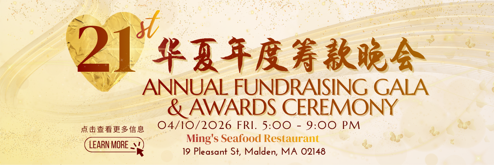
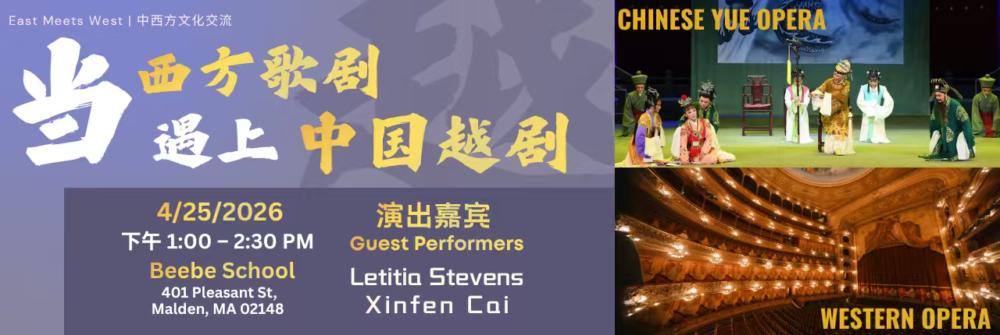

Signature Events · 招牌活動
Where the community comes together

Lunar New Year
Lunar New Year Celebration
In its 17th year — 800–1,000 guests and 20+ performances at Malden High School. One of Greater Boston's largest free cultural events. 大波士頓最大的免費文化活動之一。

Annual Gala
Fundraising Gala & Awards
Now in its 21st year — an evening honoring community leaders and sustaining the year's programs. 年度募款晚宴暨頒獎,表彰社區貢獻者。

Thanksgiving
Ping Pong Tournament
200+ players aged 8 to 70+, from 15+ towns, every Thanksgiving at Malden High School. 感恩節乒乓球錦標賽,跨世代同場較勁。

AAPI Heritage
AAPI Heritage Month
Celebrating Asian American and Pacific Islander heritage with the wider Greater Boston community. 與社區共慶亞太裔傳統月。

East Meets West
Community Gatherings
Forums, swap parties and collaborative events that bring cultures and neighbors together year-round. 全年跨文化論壇與社區聚會。

Arts & Culture
Chinese Arts & Performance
Yue opera, Tang poetry, drumming and traditional arts shared on stage and in workshops. 越劇、唐詩、鼓樂等傳統藝術展演與工作坊。